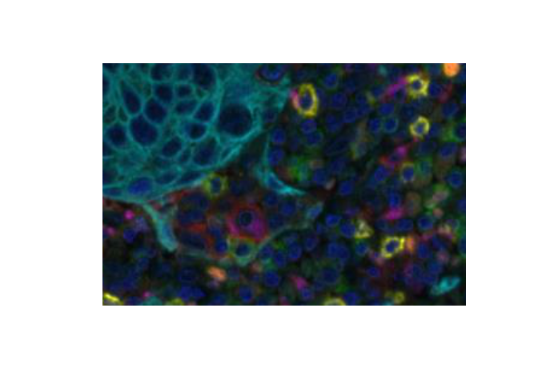

Reading and displaying inForm image Files
Kent Johnson
2020-04-21
Source:vignettes/reading_image_files.Rmd
reading_image_files.RmdinForm writes a variety of image files in JPEG and TIFF format. This tutorial shows how to read the image files in R.
The R packages tiff and jpeg provide functions readTIFF and readJPEG which read image data into R matrices. phenoptr expands on these with read_components and read_maps which read multiple images and extract useful metadata from the Image Description fields.
A variety of functions can display image data including plot.raster, ggplot2::annotation_raster and EBImage::display.
Coordinate systems
A few items to note:
Images have the origin (0, 0) at the top left. This is consistent with the
Cell X PositionandCell Y Positioncolumns of an inForm cell seg table. The row (first) dimension of an array corresponds to the \(y\) axis andCell Y Positioncolumn. The column (second) array dimension corresponds to the \(x\) axis and theCell X Positioncolumn.Image dimensions are in pixels. Cell seg tables are written with pixel dimensions and converted to microns when read by
phenoptr::read_cell_seg_data.Image display methods differ in their orientation; some show \(x\) and \(y\) as described above; others transpose the image.
Each of these items easily causes confusion; be careful and verify your work!
Reading and displaying color images
Color (RGB) images output from inForm, such as the composite image and segmentation images, can be read directly using tiff::readTIFF() or jpeg::readJPEG(). For example,
path <- system.file("extdata", "sample", "Set4_1-6plex_[16142,55840]_composite_image.jpg", package = "phenoptr") img <- jpeg::readJPEG(path) dim(img)
[1] 1400 1868 3Color images are read as 3D arrays. They can be displayed by converting to a raster.

EBImage::display will display an array in a web browser. RGB images are shown as three grayscale planes unless converted to an EBImage::Image first. EBImage::display shows the first coordinate horizontally and the second coordinate vertically so the image must be flipped to display in the expected orientation.
img_transposed <- aperm(img, c(2, 1, 3)) EBImage::display(img_transposed) EBImage::display(EBImage::Image(img_transposed, colormode='Color'))
Reading and displaying component data
inForm saves component data as multiple 32-bit floating-point images within a single TIFF file. Images smaller than 2K by 2K pixels are saved in “strip” format and may be read by tiff::readTIFF(). Larger images are saved in “tiled” format which is not supported by readTIFF(). Single fields from Vectra Polaris, Vectra 3 and Mantra are all smaller than 2K by 2K and may be read by these functions; larger fields may not read. Install the Akoya Biosciences fork of the tiff package to support tiled images and remove this limitation.
phenoptr::read_components() is a wrapper around readTIFF() which reads the individual component images from a component_data.tif file. It keeps the full-resolution component images, extracts the component names from the image descriptions, and returns a named list of image matrices.
Component data may be displayed using plot.raster or EBImage::display. See the next section for examples of displaying grayscale images such as these.
Reading and displaying segmentation maps
inForm saves segmentation maps (nuclear segmentation, etc.) as multiple 16-bit grayscale images within a single TIFF file. Most segmentation images are label images, where each object is represented by a region whose value is the object number. The membrane map is a binary image where the presence of membrane is indicated with a “1” value.
phenoptr::read_maps() is a wrapper around readTIFF() which reads map files. It returns a named list of integer-valued matrices. The list names reflect the content of the individual images, e.g. Nucleus, Cytoplasm, etc.
map_path <- system.file("extdata", "sample", "Set4_1-6plex_[16142,55840]_binary_seg_maps.tif", package = "phenoptr") maps <- phenoptr::read_maps(map_path) names(maps)
[1] "Nucleus" "Cytoplasm" "Membrane" "Tissue" The Nucleus label image contains values for background (0) and each Cell ID.
nucleus <- maps[['Nucleus']] dim(nucleus)
[1] 1400 1868range(nucleus)
[1] 0 6183range(phenoptr::sample_cell_seg_data$`Cell ID`)
[1] 11 6183Label images may be displayed with plot.raster or EBImage::display (which requires swapping axes).
nucleus_snippet <- nucleus[800:1000, 1200:1500] plot(as.raster(nucleus_snippet, max=max(nucleus_snippet)))

Plotting image data
Images have the origin (0, 0) at the top left. This is consistent with the Cell X Position and Cell Y Position columns of an inForm cell seg table but it is reversed (in \(y\)) from the usual plotting conventions. If you plot images and points together, you will have to reverse one or the other.
Here is an example using ggplot2. The \(y\)-axis is reversed using ggplot2::scale_y_reverse() and the image is then un-reversed by negating its \(y\) limits.
library(ggplot2) csd <- phenoptr::sample_cell_seg_data csd <- subset(csd, `Cell X Position`>=600 & `Cell X Position`<=750 & `Cell Y Position`>=400 & `Cell Y Position`<=500) ggplot(data=csd, aes(`Cell X Position`, `Cell Y Position`, color=Phenotype)) + scale_x_continuous(limits=c(600, 750)) + scale_y_reverse(limits=c(500, 400)) + annotation_raster(snippet, 600, 750, -400, -500) + geom_point(size=2) + coord_equal() + scale_color_manual(values=c("CK+"="cyan", "CD8+"="yellow", "other"="blue", "CD68+"="magenta", "FoxP3+"="orange")) + theme_minimal()